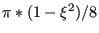
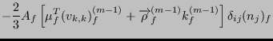
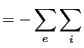
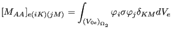

| variable | meaning |
| FILE NAMES (132 characters long) | |
| jobnamec(1) | jobname |
| jobnamec(2) | INPUT file on *VIEWFACTOR card |
| jobnamec(3) | OUTPUT file on *VIEWFACTOR card |
| jobnamec(4) | INPUT file on *SUBMODEL card (global model) |
| jobnamec(5) | FILENAME on *SUBSTRUCTURE MATRIX OUTPUT card (storage file for stiffness matrix) |
| REARRANGEMENT OF THE ORDER IN THE INPUT DECK | |
| ifreeinp | next blank line in field inp |
| ipoinp(1,i) | index of the first column in field inp containing information on a block of lines in the input deck corresponding to fundamental key i; a fundamental key is a key for which the order in the input file matters (the fundamental keys are listed in file keystart.f) |
| ipoinp(2,i) | index of the last column in field inp containing information on a block of lines in the input deck corresponding to fundamental key i; |
| inp | a column i in field inp (i.e. inp(1..3,i)) corresponds to a uninterrupted block of lines assigned to one and the same fundamental key in the input deck. inp(1,i) is its first line in the input deck, inp(2,i) its last line and inp(3,i) the next column in inp corresponding to the same fundamental key; it takes the value 0 if none other exists. |
| MATERIAL DESCRIPTION | |
| nmat | # materials |
| matname(i) | name of material i |
| no *ELECTROMAGNETICS calculation | |
|---|---|
| nelcon(1,i) | # (hyper)elastic constants for material i (negative kode for nonlinear elastic constants) |
| nelcon(2,i) | # temperature data points for the elastic constants of material i |
| elcon(0,j,i) | temperature at (hyper)elastic temperature point j of material i |
| elcon(k,j,i) | (hyper)elastic constant k at elastic temperature point j of material i |
| *ELECTROMAGNETICS calculation | |
| nelcon(1,i) | # magnetic permeability constants for material i (always two) |
| nelcon(2,i) | # temperature data points for the magnetic permeability constants of material i |
| elcon(0,j,i) | temperature at magnetic permeability temperature point j of material i |
| elcon(1,j,i) | magnetic permeability at magnetic permeability temperature point j of material i |
| elcon(2,j,i) | domain of material i |
| general | |
| nrhcon(i) | # temperature data points for the density of material i |
| rhcon(0,j,i) | temperature at density temperature point j of material i |
| rhcon(1,j,i) | density at the density temperature point j of material i |
| nshcon(i) | # temperature data points for the specific heat of material i |
| shcon(0,j,i) | temperature at temperature point j of material i |
| shcon(1,j,i) | specific heat at constant pressure at the temperature point j of material i |
| shcon(2,j,i) | dynamic viscosity at the temperature point j of material i |
| shcon(3,1,i) | specific gas constant of material i |
| no *ELECTROMAGNETICS calculation | |
| nalcon(1,i) | # of expansion constants for material i |
| nalcon(2,i) | # of temperature data points for the expansion coefficients of material i |
| alcon(0,j,i) | temperature at expansion temperature point j of material i |
| alcon(k,j,i) | expansion coefficient k at expansion temperature point j of material i |
| *ELECTROMAGNETICS calculation | |
| nalcon(1,i) | # of electrical conductivity constants for material i (always 1) |
| nalcon(2,i) | # of temperature data points for the electrical conductivity constants of material i |
| alcon(0,j,i) | temperature at electrical conductivity temperature point j of material i |
| alcon(1,j,i) | electrical conductivity coefficient at electrical conductivity temperature point j of material i |
| general | |
| ncocon(1,i) | # of conductivity constants for material i |
| ncocon(2,i) | # of temperature data points for the conductivity coefficients of material i |
| cocon(0,j,i) | temperature at conductivity temperature point j of material i |
| cocon(k,j,i) | conductivity coefficient k at conductivity temperature point j of material i |
| orname(i) | name of orientation i |
| orab(1..6,i) | coordinates of points a and b defining the new orientation |
| norien | # orientations |
| isotropic hardening | |
| nplicon(0,i) | # temperature data points for the isotropic hardening curve of material i |
| nplicon(j,i) | # of stress - plastic strain data points at temperature j for material i |
| plicon(0,j,i) | temperature data point j of material i |
| plicon(2*k-1,j,i) | stress corresponding to stress-plastic strain data point k at temperature data point j of material i |
| plicon(2*k-1,j,i) | for springs: force corresponding to force-displacement data point k at temperature data point j of material i |
| plicon(2*k-1,j,i) | for penalty contact: pressure corresponding to pressure-overclosure data point k at temperature data point j of material i |
| plicon(2*k,j,i) | plastic strain corresponding to stress-plastic strain data point k at temperature data point j of material i |
| for springs: displacement corresponding to force-displacement data point k at temperature data point j of material i | |
| for penalty contact: overclosure corresponding to pressure-overclosure data point k at temperature data point j of material i | |
| kinematic hardening | |
| nplkcon(0,i) | # temperature data points for the kinematic hardening curve of material i |
| nplkcon(j,i) | # of stress - plastic strain data points at temperature j for material i |
| plkcon(0,j,i) | temperature data point j of material i |
| plkcon(2*k-1,j,i) | stress corresponding to stress-plastic strain data point k at temperature data point j of material i |
| for penalty contact: conductance corresponding to conductance-pressure data point k at temperature data point j of material i | |
| plkcon(2*k,j,i) | plastic strain corresponding to stress-plastic strain data point k at temperature data point j of material i |
| for penalty contact: pressure corresponding to conductance-pressure data point k at temperature data point j of material i | |
| kode=-1 | Arrudy-Boyce |
| -2 | Mooney-Rivlin |
| -3 | Neo-Hooke |
| -4 | Ogden (N=1) |
| -5 | Ogden (N=2) |
| -6 | Ogden (N=3) |
| -7 | Polynomial (N=1) |
| -8 | Polynomial (N=2) |
| -9 | Polynomial (N=3) |
| -10 | Reduced Polynomial (N=1) |
| -11 | Reduced Polynomial (N=2) |
| -12 | Reduced Polynomial (N=3) |
| -13 | Van der Waals (not implemented yet) |
| -14 | Yeoh |
| -15 | Hyperfoam (N=1) |
| -16 | Hyperfoam (N=2) |
| -17 | Hyperfoam (N=3) |
| -50 | deformation plasticity |
| -51 | incremental plasticity (no viscosity) |
| -52 | viscoplasticity |
| user material routine with -kode-100 user defined constants with keyword *USER MATERIAL | |
| PROCEDURE DESCRIPTION | |
| iperturb(1) | = -1 : linear iteration in a nonlinear calculation |
| = 0 : linear | |
| = 1 : second order theory for frequency/buckling/Green calculations following a static step (PERTURBATION selected) | |
| 2 : Newton-Raphson iterative procedure is active | |
| = 3 : nonlinear material (linear or nonlinear geometric and/or heat transfer) | |
| iperturb(2) | 0 : linear geometric (NLGEOM not selected) |
| 1 : nonlinear geometric (NLGEOM selected) | |
| nmethod | 1 : static (linear or nonlinear) |
| 2 : frequency(linear) | |
| 3 : buckling (linear) | |
| 4 : dynamic (linear or nonlinear) | |
| 5 : steady state dynamics | |
| 6 : Coriolis frequency calculation | |
| 7 : flutter frequency calculation | |
| 8 : magnetostatics | |
| 9 : magnetodynamics (inductive heating) | |
| 10 : electromagnetic eigenvalue problems | |
| 11 : superelement creation | |
| 12 : sensitivity analysis | |
| irstrt | 0: no restart calculation |
| -1: RESTART,READ; no RESTART,WRITE active | |
n 0: frequency on a RESTART,WRITE card; RESTART, READ
may be active 0: frequency on a RESTART,WRITE card; RESTART, READ
may be active |
|
| iout | governs the output and the calculation of the solution in results.c |
| -2: v is assumed to be known and is used to calculate strains, stresses..., no result output; corresponds to iout=-1 with in addition the calculation of the internal energy density | |
| -1: v is assumed to be known and is used to calculate strains, stresses..., no result output; is used to take changes in SPC's and MPC's at the start of a new increment or iteration into account | |
| 0: v is calculated from the system solution and strains, stresses.. are calculated, no result output | |
| 1: v is calculated from the system solution and strains,stresses.. are calculated, requested results output | |
| 2: v is assumed to be known and is used to calculate strains, stresses..., requested results output | |
| GEOMETRY DESCRIPTION | |
| nk | highest node number |
| co(i,j) | coordinate i of node j |
| inotr(1,j) | transformation number applicable in node j |
| inotr(2,j) | a SPC in a node j in which a transformation applies corresponds to a MPC. inotr(2,j) contains the number of a new node generated for the inhomogeneous part of the MPC |
| TOPOLOGY DESCRIPTION | |
| ne | highest element number |
| mi(1) | max # of integration points per element (max over all elements) |
| mi(2) | max degree of freedom per node (max over all nodes) in fields like v(0:mi(2))... |
| if 0: only temperature DOF | |
| if 3: temperature + displacements | |
| if 4: temperature + displacements/velocities + pressure | |
| kon(i) | field containing the connectivity lists of the elements in successive order |
| for 1d and 2d elements (no composites) the 3d-expansion is stored first, followed by the topology of the original 1d or 2d element, for a shell composite this is followed by the topology of the expansion of each layer | |
| For element i | |
| ipkon(i) | (location in kon of the first node in the element connectivity list of element i)-1 |
| lakon(i) | element label |
| C3D4: linear tetrahedral element (F3D4 for 3D-fluids) | |
| C3D6: linear wedge element (F3D6 for 3D-fluids) | |
| C3D6 E: expanded plane strain 3-node element = CPE3 | |
| C3D6 S: expanded plane stress 3-node element = CPS3 | |
| C3D6 A: expanded axisymmetric 3-node element = CAX3 | |
| C3D6 L: expanded 3-node shell element = S3 | |
| C3D8: linear hexahedral element (F3D8 for 3D-fluids) | |
| C3D8I: linear hexahedral element with incompatible modes | |
| C3D8 E: expanded plane strain 4-node element = CPE4 | |
| C3D8 S: expanded plane stress 4-node element = CPS4 | |
| C3D8 A: expanded axisymmetric 4-node element = CAX4 | |
| C3D8I L: expanded 4-node shell element = S4 | |
| C3D8I B: expanded 2-node beam element = B31 | |
| C3D8R: linear hexahedral element with reduced integration | |
| C3D8R E: expanded plane strain 4-node element with reduced integration = CPE4R | |
| C3D8R S: expanded plane stress 4-node element with reduced integration = CPS4R | |
| C3D8R A: expanded axisymmetric 4-node element with reduced integration = CAX4R | |
| C3D8R L: expanded 4-node shell element with reduced integration = S4R | |
| C3D8R B: expanded 2-node beam element with reduced integration = B31R | |
| C3D10: quadratic tetrahedral element | |
| C3D15: quadratic wedge element | |
| C3D15 E: expanded plane strain 6-node element = CPE6 | |
| C3D15 S: expanded plane stress 6-node element = CPS6 | |
| C3D15 A: expanded axisymmetric 6-node element = CAX6 | |
| C3D15 L: expanded 6-node shell element = S6 | |
| C3D15 LC: expanded composite 6-node shell element = S6 | |
| C3D20: quadratic hexahedral element | |
| C3D20 E: expanded plane strain 8-node element = CPE8 | |
| C3D20 S: expanded plane stress 8-node element = CPS8 | |
| C3D20 A: expanded axisymmetric 8-node element = CAX8 | |
| C3D20 L: expanded 8-node shell element = S8 | |
| C3D20 B: expanded 3-node beam element = B32 | |
| C3D20R: quadratic hexahedral element with reduced integration | |
| C3D20RE: expanded plane strain 8-node element with reduced integration = CPE8R | |
| C3D20RS: expanded plane stress 8-node element with reduced integration = CPS8R | |
| C3D20RA: expanded axisymmetric 8-node element with reduced integration = CAX8R | |
| C3D20RL: expanded 8-node shell element with reduced integration = S8R | |
| C3D20RLC: expanded composite 8-node shell element with reduced integration = S8R | |
| C3D20RB: expanded 3-node beam element with reduced integration = B32R | |
| GAPUNI: 2-node gap element | |
| ESPRNGA1 : 2-node spring element | |
| EDSHPTA1 : 2-node dashpot element | |
| ESPRNGC3 : 4-node contact spring element | |
| ESPRNGC4 : 5-node contact spring element | |
| ESPRNGC6 : 7-node contact spring element | |
| ESPRNGC8 : 9-node contact spring element | |
| ESPRNGC9 : 10-node contact spring element | |
| ESPRNGF3 : 4-node advection spring element | |
| ESPRNGF4 : 5-node advection spring element | |
| ESPRNGF6 : 7-node advection spring element | |
| ESPRNGF8 : 9-node advection spring element | |
| network elements (D-type):] | |
| DATR : absolute to relative | |
| DCARBS : carbon seal | |
| DCARBSGE : carbon seal GE (proprietary) | |
| DCHAR : characteristic | |
| DGAPFA : gas pipe Fanno adiabatic | |
| DGAPFAA : gas pipe Fanno adiabatic Albers (proprietary) | |
| DGAPFAF : gas pipe Fanno adiabatic Friedel (proprietary) | |
| DGAPFI : gas pipe Fanno isothermal | |
| DGAPFIA : gas pipe Fanno isothermal Albers (proprietary) | |
| DGAPFIF : gas pipe Fanno isothermal Friedel (proprietary) | |
| DLABD : labyrinth dummy (proprietary) | |
| DLABFSN : labyrinth flexible single | |
| DLABFSP : labyrinth flexible stepped | |
| DLABFSR : labyrinth flexible straight | |
| DLABSN : labyrinth single | |
| DLABSP : labyrinth stepped | |
| DLABSR : labyrinth straight | |
| DLDOP : oil pump (proprietary) | |
| DLICH : channel straight | |
| DLICHCO : channel contraction | |
| DLICHDO : channel discontinuous opening | |
| DLICHDR : channel drop | |
| DLICHDS : channel discontinuous slope | |
| DLICHEL : channel enlargement | |
| DLICHRE : channel reservoir | |
| DLICHSG : channel sluice gate | |
| DLICHSO : channel sluice opening | |
| DLICHST : channel step | |
| DLICHWE : channel weir crest | |
| DLICHWO : channel weir slope | |
| DLIPIBE : (liquid) pipe bend | |
| DLIPIBR : (liquid) pipe branch (not available yet) | |
| DLIPICO : (liquid) pipe contraction | |
| DLIPIDI : (liquid) pipe diaphragm | |
| DLIPIEL : (liquid) pipe enlargement | |
| DLIPIEN : (liquid) pipe entrance | |
| DLIPIGV : (liquid) pipe gate valve | |
| DLIPIMA : (liquid) pipe Manning | |
| DLIPIMAF : (liquid) pipe Manning flexible | |
| DLIPIWC : (liquid) pipe White-Colebrook | |
| DLIPIWCF : (liquid) pipe White-Colebrook flexible | |
| DLIPU : liquid pump | |
| DLPBEIDC : (liquid) restrictor bend Idelchik circular | |
| DLPBEIDR : (liquid) restrictor bend Idelchik rectangular | |
| DLPBEMA : (liquid) restrictor own (proprietary) | |
| DLPBEMI : (liquid) restrictor bend Miller | |
| DLPBRJG : (liquid) (liquid) branch joint GE | |
| DLPBRJI1 : (liquid) branch joint Idelchik1 | |
| DLPBRJI2 : (liquid) (liquid) branch joint Idelchik2 | |
| DLPBRSG : (liquid) (liquid) branch split GE | |
| DLPBRSI1 : (liquid) branch split Idelchik1 | |
| DLPBRSI2 : (liquid) branch split Idelchik2 | |
| DLPC1 : (liquid) orifice Cd=1 | |
| DLPCO : (liquid) restrictor contraction | |
| DLPEL : (liquid) restrictor enlargement | |
| DLPEN : (liquid) restrictor entry | |
| DLPEX : (liquid) restrictor exit | |
| DLPLOID : (liquid) restrictor long orifice Idelchik | |
| DLPLOLI : (liquid) restrictor long orifice Lichtarowicz | |
| DLPUS : (liquid) restrictor user | |
| DLPVF : (liquid) vortex free | |
| DLPVS : (liquid) vortex forced | |
| DLPWAOR : (liquid) restrictor wall orifice | |
| DMRGF : Moehring centrifugal | |
| DMRGP : Moehring centripetal | |
| DORBG : orifice Bragg (proprietary) | |
| DORBT : bleed tapping | |
| DORC1 : orifice Cd=1 | |
| DORMA : orifice proprietary, rotational correction Albers (proprietary) | |
| DORMM : orifice McGreehan Schotsch, rotational correction McGreehan and Schotsch | |
| DORPA : orifice Parker and Kercher, rotational correction Albers (proprietary) | |
| DORPM : orifice Parker and Kercher, rotational correction McGreehan and Schotsch | |
| DORPN : preswirl nozzle | |
| DREBEIDC : restrictor bend Idelchik circular | |
| DREBEIDR : restrictor bend Idelchik rectangular | |
| DREBEMA : restrictor own (proprietary) | |
| DREBEMI : restrictor bend Miller | |
| DREBRJG : branch joint GE | |
| DREBRJI1 : branch joint Idelchik1 | |
| DREBRJI2 : branch joint Idelchik2 | |
| DREBRSG : branch split GE | |
| DREBRSI1 : branch split Idelchik1 | |
| DREBRSI2 : branch split Idelchik2 | |
| DRECO : restrictor contraction | |
| DREEL : restrictor enlargement | |
| DREEN : restrictor entrance | |
| DREEX : restrictor exit | |
| DRELOID : restrictor long orifice Idelchik | |
| DRELOLI : restrictor long orifice Lichtarowicz | |
| DREUS : restrictor user | |
| DREWAOR : restrictor wall orifice | |
| DRIMS : rim seal (proprietary) | |
| DRTA : relative to absolute | |
| DSPUMP : scavenge pump (proprietary) | |
| DVOFO : vortex forced | |
| DVOFR : vortex free | |
| Uxxxxyzz : user element with type number xxxx, maximum degree of freedom in any node y and number of nodes zz | |
| ielorien(j,i) | orientation number of layer j |
| ielmat(j,i) | material number of layer j |
| ielprop(i) | pointer to the position in field prop after which the properties for element i start (prop(ielprop(i)+1),prop(ielprop(i)+2)...); for networks and general beam sections |
| nuel | number of different user element types |
| For user element i | |
| iuel(1,i) | type number of the user element |
| iuel(2,i) | number of itegration points |
| iuel(3,i) | max degree of freedom in any of the nodes |
| iuel 4,i) | number of nodes belonging to the element |
| SETS AND SURFACES | |
| nset | number of sets (including surfaces) |
| ialset(i) | member of a set or surface: this is a |
| - node for a node set or nodal surface | |
| - element for an element set | |
| - number made up of 10*(element number)+facial number for an element face surface | |
| if ialset(i)=-1 it means that all nodes or elements (depending on the kind of set) in between ialset(i-2) and ialset(i-1) are also member of the set | |
| For set i | |
| set(i) | name of the set; this is the user defined name |
| + N for node sets | |
| + E for element sets | |
| + S for nodal surfaces | |
| + T for element face surfaces | |
| istartset(i) | pointer into ialset containing the first set member |
| iendset(i) | pointer into ialset containing the last set member |
| TIE CONSTRAINTS | |
| ntie | number of tie constraints |
| For tie constraint i | |
| tieset(1,i) | name of the tie constraint; |
| for contact constraints (which do not have a name) the adjust nodal set name is stored, if any, and a C is appended at the end (C is replaced by - for deactivated contact pairs) | |
| for multistage constraints a M is appended at the end | |
| for a contact tie a T is appended at the end | |
| for submodels (which do not have a name) a fictitious name SUBMODELi is used, where i is a three-digit consecutive number and a S is appended at the end | |
| tieset(2,i) | dependent surface name + S |
| tieset(3,i) | independent surface name |
| + S for nodal surfaces | |
| + T for element face surfaces | |
| tietol(1,i) | tie tolerance; used for cyclic symmetry ties |
| special meaning for contact pairs: | |
| 0 for large sliding |
|
| if |
|
| tietol(2,i) | for contact pairs: number of the relevant interaction definition (is treated as a material) |
| for ties: -1 means ADJUST=NO, +1 means ADJUST=YES (default) | |
| tietol(3,i) | only for contact pairs: the clearance defined in a *CLEARANCE card |
| CONTACT | |
| ncont | total number of triangles in the triangulation of all independent surfaces |
| ncone | total number of slave nodes in the contact formulation |
| For triangle i | |
| koncont(1..3,i) | nodes belonging to the triangle |
| koncont(4,i) | element face to which the triangle belongs: 10*(element number) + face number |
| cg(1..3,i) | global coordinates of the center of gravity |
| straight(1..4,i) | coefficients of the equation of the plane perpendicular to the triangle and containing its first edge (going through the first and second node of koncont) |
| straight(5..8,i) | idem for the second edge |
| straight(9..12,i) | idem for the third edge |
| straight(13..16,i) | coefficients of the equation of the plane containing the triangle |
| For contact tie constraint i | |
| itietri(1,i) | first triangle in field koncont of the master surface corresponding to contact tie constraint i |
| itietri(2,i) | last triangle in field koncont of the master surface corresponding to contact tie constraint i |
| SHELL (2D) AND BEAM (1D) VARIABLES (INCLUDING PLANE STRAIN, PLANE STRESS AND AXISYMMETRIC ELEMENTS) | |
| iponor(2,i) | two pointers for entry i of kon. The first pointer points to the location in xnor preceding the normals of entry i, the second points to the location in knor of the newly generated dependent nodes of entry i. |
| xnor(i) | field containing the normals in nodes on the elements they belong to |
| knor(i) | field containing the extra nodes needed to expand the shell and beam elements to volume elements |
| thickn(2,i) | thicknesses (one for shells, two for beams) in node i |
| thicke(j,i) | thicknesses (one (j=1) for non-composite shells, two (j=1,2) for beams and n (j=1..n) for composite shells consisting of n layers) in element nodes. The entries correspond to the nodal entries in field kon |
| offset(2,i) | offsets (one for shells, two for beams) in element i |
| iponoel(i) | pointer for node i into field inoel, which stores the 1D and 2D elements belonging to the node. |
| inoel(3,i) | field containing an element number, a local node number within this element and a pointer to another entry (or zero if there is no other). |
| inoelfree | next free field in inoel |
| rig(i) | integer field indicating whether node i is a rigid node (nonzero value) or not (zero value). In a rigid node or knot all expansion nodes except the ones not in the midface of plane stress, plane strain and axisymmetric elements are connected with a rigid body MPC. If node i is a rigid node rig(i) is the number of the rotational node of the knot; if the node belongs to axisymmetric, plane stress and plane strain elements only, no rotational node is linked to the knot and rig(i)=-1 |
| AMPLITUDES | |
| nam | # amplitude definitions |
| amta(1,j) | time of (time,amplitude) pair j |
| amta(2,j) | amplitude of (time,amplitude) pair j |
| namtot | total # of (time,amplitude) pairs |
| For amplitude i | |
| amname(i) | name of the amplitude |
| namta(1,i) | location of first (time,amplitude) pair in field amta |
| namta(2,i) | location of last (time,amplitude) pair in field amta |
| namta(3,i) | in absolute value the amplitude it refers to; if
abs(namta(3,i))=i it refers to itself. If abs(namta(3,i))=j, amplitude i is a
time delay of amplitude j the value of which is stored in
amta(1,namta(1,i)); in the latter case amta(2,namta(1,i)) is without
meaning; If namta(3,i)0 the time in amta for amplitude i is step time,
else it is total time. |
| TRANSFORMS | |
| ntrans | # transform definitions |
| trab(1..6,i) | coordinates of two points defining the transform |
| trab(7,i) | =-1 for cylindrical transformations |
| =1 for rectangular transformations | |
| SINGLE POINT CONSTRAINTS | |
| nboun | # SPC's |
| For SPC i | |
| nodeboun(i) | SPC node |
| ndirboun(i) | SPC direction |
| typeboun(i) | SPC type (SPCs can contain the nonhomogeneous part of MPCs) |
| A=acceleration | |
| B=prescribed boundary condition | |
| M=midplane | |
| R=rigidbody | |
| U=usermpc | |
| xboun(i) | magnitude of constraint at end of a step |
| xbounold(i) | magnitude of constraint at beginning of a step |
| xbounact(i) | magnitude of constraint at the end of the present increment |
| xbounini(i) | magnitude of constraint at the start of the present increment |
| iamboun(i) | amplitude number |
| for submodels the step number is inserted | |
| ikboun(i) | ordered array of the DOFs corresponding to the SPC's (DOF=8*(nodeboun(i)-1)+ndirboun(i)) |
| ilboun(i) | original SPC number for ikboun(i) |
| MULTIPLE POINT CONSTRAINTS | |
| labmpc(i) | label of MPC i |
| j=ipompc(i) | starting location in nodempc and coefmpc of MPC i |
| nodempc(1,j) | node of first term of MPC i |
| nodempc(2,j) | direction of first term of MPC i |
| k=nodempc(3,j) | next entry in field nodempc for MPC i (if zero: no more terms in MPC) |
| coefmpc(j) | first coefficient belonging to MPC i |
| nodempc(1,k) | node of second term of MPC i |
| nodempc(2,k) | direction of second term of MPC i |
| coefmpc(k) | coefficient of second term of MPC i |
| ikmpc (i) | ordered array of the dependent DOFs corresponding to the MPC's DOF=8*(nodempc(1,ipompc(i))-1)+nodempc(2,ipompc(i)) |
| ilmpc (i) | original MPC number for ikmpc(i) |
| memmpc_ | upper value of sum of number of terms in all MPC's |
| maxlenmpc | maximum number of terms in any MPC |
| icascade | 0 : MPC's did not change since the last iteration |
| 1 : MPC's changed since last iteration : dependency check in cascade.c necessary | |
| 2 : at least one nonlinear MPC had DOFs in common with a linear MPC or another nonlinear MPC. dependency check is necessary in each iteration | |
| POINT LOADS | |
| nforc | # of point loads |
| For point load i | |
| nodeforc(1,i) | node in which force is applied |
| nodeforc(2,i) | sector number, if force is real; sector number + # sectors if force is imaginary (only for modal dynamics and steady state dynamics analyses with cyclic symmetry) |
| ndirforc(i) | direction of force |
| xforc(i) | magnitude of force at end of a step |
| xforcold(i) | magnitude of force at start of a step |
| xforcact(i) | actual magnitude |
| iamforc(i) | amplitude number |
| idefforc(i) | 0: no force was defined for this node and direction on the same sector before within the actual step |
| 1: at least one force was defined for this node and direction on the same sector before within the actual step | |
| ikforc(i) | ordered array of the DOFs corresponding to the point loads (DOF=8*(nodeboun(i)-1)+ndirboun(i)) |
| ilforc(i) | original SPC number for ikforc(i) |
| FACIAL DISTRIBUTED LOADS | |
| nload | # of facial distributed loads |
| For distributed load i | |
| nelemload(1,i) | element to which distributed load is applied |
| nelemload(2,i) | node for the environment temperature (only for heat transfer analyses); sector number, if load is real; sector number + # sectors if load is imaginary (only for modal dynamics and steady state dynamics analyses with cyclic symmetry) |
| sideload(i) | load label; indicated element side to which load is applied |
| xload(1,i) | magnitude of load at end of a step or, for heat transfer analyses, the convection (*FILM) or the radiation coefficient (*RADIATE) |
| xload(2,i) | the environment temperature (only for heat transfer analyses |
| xloadold(1..2,i) | magnitude of load at start of a step |
| xloadact(1..2,i) | actual magnitude of load |
| iamload(1,i) | amplitude number for xload(1,i) |
| for submodels the step number is inserted | |
| iamload(2,i) | amplitude number for xload(2,i) |
| idefload(i) | 0: no load was defined on the same element with the same label and on the same sector before within the actual step |
| 1: at least one load was defined on the same element with the same label and on the same sector before within the actual step | |
| MASS FLOW RATE | |
| nflow | # of network elements |
| TEMPERATURE LOADS | |
| t0(i) | initial temperature in node i at the start of the calculation |
| t1(i) | temperature at the end of a step in node i |
| t1old(i) | temperature at the start of a step in node i |
| t1act(i) | actual temperature in node i |
| iamt1(i) | amplitude number |
| MECHANICAL BODY LOADS | |
| nbody | # of mechanical body loads |
| For body load i | |
| ibody(1,i) | code identifying the kind of body load |
| 1: centrifugal loading | |
| 2: gravity loading with known gravity vector | |
| 3: generalized gravity loading | |
| ibody(2,i) | amplitude number for load i |
| ibody(3,i) | load case number for load i |
| cbody(i) | element number or element set to which load i applies |
| xbody(1,i) | size of the body load |
| xbody(2..4,i) | for centrifugal loading: point on the axis |
| for gravity loading with known gravity vector: normalized gravity vector | |
| xbody(5..7,i) | for centrifugal loading: normalized vector on the rotation axis |
| xbodyact(1,i) | actual magnitude of load |
| xbodyact(2..7,i) | identical to the corresponding entries in xbody |
| idefbody(i) | 0: no body load was defined on the same set with the same code and the same load case number before within the actual step |
| 1: at least one body load was defined on the same set with the same code and the same load case number before within the actual step | |
| For element i | |
| ipobody(1,i) | body load applied to element i, if any, else 0 |
| ipobody(2,i) | index referring to the line in field ipobody containing the next body load applied to element i, i.e. ipobody(1,ipobody(2,i)), else 0 |
| STRESS, STRAIN AND ENERGY FIELDS | |
| eei(i,j,k) | in general : Lagrange strain component i in integration point j of element k (linear strain in linear elastic calculations) |
| for elements with &sstarf#star;DEFORMATION PLASTICITY property: Eulerian strain component i in integration point j of element k (linear strain in linear elastic calculations) | |
| eeiini(i,j,k) | Lagrange strain component i in integration point of element k at the start of an increment |
| een(i,j) | Lagrange strain component i in node j (mean over all adjacent elements linear strain in linear elastic calculations) |
| stx(i,j,k) | Cauchy or PK2 stress component i in integration point j of element k at the end of an iteration (linear stress in linear elastic calculations). |
| For spring elements stx(1..3,1,k) contains the relative displacements for element k and stx(4..6,1,k) the contact stresses | |
| sti(i,j,k) | PK2 stress component i in integration point j of element k at the start of an iteration (linear stress in linear elastic calculations) |
| stiini(i,j,k) | PK2 stress component i in integration point j of element k at the start of an increment |
| stn(i,j) | Cauchy stress component i in node j (mean over all adjacent elements; "linear" stress in linear elastic calculations) |
| ener(j,k) | strain energy in integration point j of element k; |
| ener(j,ne+k) | kinetic energy in integration point j of element k; if k is a contact spring element: friction energy (j=1) |
| enerini(j,k) | strain energy in integration point of element k at the start of an increment |
| enern(j) | strain energy in node j (mean over all adjacent elements |
| THERMAL ANALYSIS | |
| ithermal(1) | 0 : no temperatures involved in the calculation |
| (in this manual also | 1 : stress analysis with given temperature field |
| called ithermal) | 2 : thermal analysis (no displacements) |
| 3 : coupled thermal-mechanical analysis : temperatures and displacements are solved for simultaneously | |
| 4 : uncoupled thermal-mechanical analysis : in a new increment temperatures are solved first, followed by the displacements | |
| ithermal(2) | used to determine boundary conditions for plane stress, plane strain and axisymmetric elements |
| 0 : no temperatures involved in the calculation | |
| 1 : no heat transfer nor coupled steps in the input deck | |
| 2 : no mechanical nor coupled steps in the input deck | |
| 3 : at least one mechanical and one thermal step or at least one coupled step in the input deck | |
| v(0,j) | temperature of node j at the end of
an iteration (for ithermal 1) |
| vold(0,j) | temperature of node j at the start
of an iteration (for ithermal 1) |
| vini(0,j) | temperature of node j at the start
of an increment (for ithermal 1) |
| fn(0,j) | actual temperature at node j (for ithermal 1) |
| qfx(i,j,k) | heat flux component i in integration point j of element k at the end of an iteration |
| qfn(i,j) | heat flux component i in node j (mean over all adjacent elements) |
| DISPLACEMENTS AND SPATIAL/TIME DERIVATIVES | |
| v(i,j) | displacement of node j in direction i at the end of an iteration |
| vold(i,j) | displacement of node j in direction i at the start of an iteration |
| vini(i,j) | displacement of node j in direction i at the start of an increment |
| ve(i,j) | velocity of node j in direction i at the end of an iteration |
| veold(i,j) | velocity of node j in direction i at the start of an iteration |
| veini(i,j) | velocity of node j in direction i at the start of an increment |
| accold(i,j) | acceleration of node j in direction i at the start of an iteration |
| accini(i,j) | acceleration of node j in direction i at the start of an increment |
| vkl(i,j) | (i,j) component of the displacement gradient tensor at the end of an iteration |
| xkl(i,j) | (i,j) component of the deformation gradient tensor at the end of an iteration |
| xikl(i,j) | (i,j) component of the deformation gradient tensor at the start of an increment |
| ckl(i,j) | (i,j) component of the inverse of the deformation gradient tensor |
| LINEAR EQUATION SYSTEM | |
| nasym | 0: symmetrical system |
| 1: asymmetrical system | |
| ad(i) | element i on diagonal of stiffness matrix |
| au(i) | element i in upper triangle of stiffness matrix |
| irow(i) | row of element i in field au (i.e. au(i)) |
| icol(i) | number of subdiagonal nonzero's in column i (only for symmetric matrices) |
| jq(i) | location in field irow of the first subdiagonal nonzero in column i (only for symmetric matrices) |
| adb(i) | element i on diagonal of mass matrix, or, for buckling, of the incremental stiffness matrix (only nonzero elements are stored) |
| aub(i) | element i in upper triangle of mass matrix, or, for buckling, of the incremental stiffness matrix (only nonzero elements are stored) |
| neq[0] | # of mechanical equations |
| neq[1] | sum of mechanical and thermal equations |
| neq[2] | neq[1] + # of single point constraints (only for modal calculations) |
| nzl | number of the column such that all columns with a higher column number do not contain any (projected) nonzero off-diagonal terms ( neq[1]) |
| nzs[0] | sum of projected nonzero mechanical off-diagonal terms |
| nzs[1] | nzs[0]+sum of projected nonzero thermal off-diagonal terms |
| nzs[2] | nzs[1] + sum of nonzero coefficients of SPC degrees of freedom (only for modal calculations) |
| nactdof(i,j) | >0: actual degree of freedom (in the system of equations) of DOF i of node j |
| <0 and even: -nactdof(i,j)/2 is the SPC number applied to this degree of freedom | |
| <0 and odd: (-nactdof(i,j)+1)/2 is the MPC number for which this degree of freedom constitutes the dependent term | |
| inputformat | =0: matrix is symmetric; lower triangular matrix is stored in fields ad (diagonal), au (subdiagonal elements), irow, icol and jq. |
| =1: matrix is not symmetric. Diagonal and subdiagonal entries are stored as for inputformat=0; The superdiagonal entries are stored at the end of au in exactly the same order as the symmetric subdiagonal counterpart | |
| INTERNAL AND EXTERNAL FORCES | |
| fext(i) | external mechanical forces in DOF i (due to point loads and distributed loads, including centrifugal and gravity loads, but excluding temperature loading and displacement loading) |
| fextini(i) | external mechanical forces in DOF i (due to point loads and distributed loads, including centrifugal and gravity loads, but excluding temperature loading and displacement loading) at the end of the last increment |
| finc(i) | external mechanical forces in DOF i augmented by contributions due to temperature loading and prescribed displacements; used in linear calculations only |
| f(i) | actual internal forces in DOF i due to : |
| actual displacements in the independent nodes; | |
| prescribed displacements at the end of the increment in the dependent nodes; | |
| temperatures at the end of the increment in all nodes | |
| fini(i) | internal forces in DOF i at the end of the last increment |
| b(i) | right hand side of the equation system : difference between fext and f in nonlinear calcultions; for linear calculations, b=finc. |
| fn(i,j) | actual force at node j in direction i |
| INCREMENT PARAMETERS | |
| tinc | user given increment size (can be modified by the program if the parameter DIRECT is not activated) |
| tper | user given step size |
| dtheta | normalized (by tper) increment size |
| theta | normalized (by tper) size of all previous increments (not including the present increment) |
| reltime | theta+dtheta |
| dtime | real time increment size |
| time | real time size of all previous increments INCLUDING the present increment |
| ttime | real time size of all previous steps |
| DIRECT INTEGRATION DYNAMICS | |
| alpha,bet,gam | parameter in the alpha-method of Hilber, Hughes and Taylor |
| iexpl | =0 : implicit dynamics |
| =1 : explicit dynamics | |
| FREQUENCY CALCULATIONS | |
| mei[0] | number of requested eigenvalues |
| mei[1] | number of Lanczos vectors |
| mei[2] | maximum number of iterations |
| mei[3] | if 1: store eigenfrequencies, eigenmodes, mass matrix and possibly stiffness matrix in .eig file, else 0 |
| fei[0] | tolerance (accuracy) |
| fei[1] | lower value of requested frequency range |
| fei[2] | upper value of requested frequency range |
| CYCLIC SYMMETRY CALCULATIONS | |
| mcs | number of cyclic symmetry parts |
| ics | one-dimensional field; contains all independent nodes, one part after the other, and sorted within each part |
| rcs | one-dimensional field; contains the corresponding radial coordinates |
| zcs | one-dimensional field; contains the corresponding axial coordinates |
| For cyclic symmetry part i | |
| cs(1,i) | number of segments in |
| cs(2,i) | minimum nodal diameter |
| cs(3,i) | maximum nodal diameter |
| cs(4,i) | number of nodes on the independent side |
| cs(5,i) | number of sections to be plotted |
| cs(6..12,i) | coordinates of two points on the cyclic symmetry axis |
| cs(13,i) | number of the element set (for plotting purposes) |
| cs(14,i) | total number of independent nodes in all previously defined cyclic symmetry parts |
| cs(15,i) | cos(angle) where angle = 2* |
| cs(16,i) | sin(angle) where angle = 2* |
| cs(17,i) | number of tie constraint |
| MODAL DYNAMICS AND STEADY STATE DYNAMICS CALCULATIONS | |
| For Rayleigh damping (modal and steady state dynamics) | |
| xmodal(1) | (first Rayleigh coefficient) |
| xmodal(2) | (second Rayleigh coefficient) |
| For steady state dynamics | |
| xmodal(3) | lower frequency bound |
| xmodal(4) | upper frequency bound |
| xmodal(5) | number of data points
|
| xmodal(6) | bias |
| xmodal(7) | if harmonic: -0.5; if not harmonic: number of Fourier coefficients + 0.5 |
| xmodal(8) | lower time bound for one period (nonharmonic loading) |
| xmodal(9) | upper time bound |
| For damping (modal and steady state dynamics) | |
| xmodal(10) | internal number of node set for which results are to be calculated |
| xmodal(11) | for Rayleigh damping: -0.5 |
| for direct damping: largest mode for which  is defined +0.5 | |
| For direct damping | |
| xmodal(12.. | values of the coefficients |
| imddof(*) | dofs which are retained (requested output, applied loads..) |
| nmddof | number of dofs in imddof |
| imdnode(*) | nodes which are retained (requested output, contact nodes..) |
| nmdnode | number of nodes in imdnode |
| imdboun(*) | boundary conditions needed at retained nodes |
| nmdboun | size of field imdboun |
| imdmpc(*) | MPCs needed at retained nodes |
| nmdmpc | size of field imdmpc |
| imdelem(*) | elements which are retained (calculation of stresses at the integration points....) |
| nmdelem | size of field imdelem |
| iznode(*) | nodes in imdnode + nodes with loading (user and non-user); only the results in the nodes in iznode are mapped onto the other sectors |
| nznode | size of field iznode |
| izdof(*) | retained dofs: dofs in imddof + dofs in nodes with non-user cloads and dloads; only those dofs are stored in field z |
| nzdof | size of field izdof |
| OUTPUT IN .DAT FILE | |
| prset(i) | node or element set corresponding to output request i |
| prlab(i) | label corresponding to output request i. It contains 6 characters. The first 4 are reserved for the field name, e.g. 'U ' for displacements, the fifth for the value of the TOTALS parameter ('T' for TOTALS=YES, 'O' for TOTALS=ONLY and ' ' else) and the sixth for the value of the GLOBAL parameter ('G' for GLOBAL=YES and 'L' for GLOBAL=NO). |
| nprint | number of print requests |
| OUTPUT IN .FRD FILE | |
| filab(i) | label corresponding to output field i. It contains 6 characters for the kind of output and 81 characters for the node set for which the output is requested, if any. The first 4 are reserved for the field name. The order is fixed: filab(1)='U ', filab(2)='NT ',filab(3)='S ',filab(4)='E ', filab(5)='RF ', filab(6)='PEEQ', filab(7)='ENER', filab(8)='SDV ', filab(9)='HFL ', filab(10)='RFL ', filab(11)='PU ', filab(12)='PNT ', filab(13)='ZZS ', filab(14)='TT ', filab(15)='MF ', filab(16)='PT ', filab(17)='TS ', filab(18)='PHS ', filab(19)='MAXU',filab(20)='MAXS', filab(21)='V ',filab(22)='PS ',filab(23)='MACH', filab(24)='CP ', filab(25)='TURB', filab(26)='CONT ' filab(27)='CELS ', filab(28)='DEPT ', filab(29)='HCRI ', filab(30)='MAXE', filab(31)='PRF ', filab(32)='ME ', filab(33)='HER, filab(34)='VF ', filab(35)='PSF ', filab(36)='TSF ', filab(37)='PTF ', filab(38)='TTF ', filab(39)='SF ', filab(40)='HFLF', filab(41)='SVF ', filab(42)='ECD ', filab(43)='POT ', filab(44)='EMFE', filab(45)='EMFB', filab(46)='PCON', filab(47)=SEN ' and filab(48)='RM ' (the latter refers to mesh refinement). Results are stored for the complete mesh. A field is not selected if the first 4 characters are blank, e.g. the stress is not stored if filab(3)(1:4)=' '. An exception to this rule is formed for filab(1): here, only the first two characters are used and should be either 'U ' or ' ', depending on whether displacements are requested are not. The third character takes the value 'C' if the user wishes that the contact elements in each iteration of the last increment are stored in dedicated files, else it is blank. The fourth character takes the value 'I' if the user wishes that the displacements of the iterations of the last increment are stored (used for debugging in case of divergence), else it is blank. If the mesh contains 1D or 2D elements, the fifth character takes the value 'I' if the results are to be interpolated, 'M' if the section forces are requested instead of the stresses and 'E' if the 1D/2D element results are to be given on the expanded elements. In all other cases the fifth character is blank: ' '. The sixth character contains the value of the GLOBAL parameter ('G' for GLOBAL=YES and 'L' for GLOBAL=NO). The entries filab(13)='RFRES ' and filab(14)='RFLRES' are reserved for the output of the residual forces and heat fluxes in case of no convergence and cannot be selected by the user: the residual forces and heat fluxes are automatically stored if the calculation stops due to divergence. |
| inum(i) | =-1: network node |
| =1: structural node or 3D fluid node | |
| CONVECTION NETWORKS | |
| ntg | number of gas nodes |
| For gas node i | |
| itg(i) | global node number |
| nactdog(j,i) | if |
| j=0 and corner node: total temperature | |
| j=1 and midside node: mass flow | |
| j=2 and corner node: total pressure | |
| j=3 and midside node: geometry (e.g. |
|
| nacteq(j,i) | if |
| j=0 and corner node: conservation of energy | |
| j=1 and corner node: conservation of mass | |
| j=2 and midside node: convervation of momentum | |
| ineighe(i) | only for gas network nodes (no liquids): |
| if 0: itg(i) is a midside node | |
| if -1: itg(i) is a chamber | |
| if 0: ineighe(i) is a gas pipe element itg(i) belongs to |
|
| v(j,i) | value of degree of freedom j in node i (global numbering). The physical significance of j depends on whether the node is a midside node or corner node of a network element: |
| j=0 and corner node: total temperature | |
| j=1 and midside node: mass flow | |
| j=2 and corner node: total pressure | |
| j=3 and corner node: static temperature | |
| j=3 and midside node: geometry | |
| nflow | number of network elements |
| ieg(i) | global element number corresponding to network element i |
| network | if 0: no network |
| if 1: defined as purely thermal by the user on the *STEP card (only unknowns: total temperature; simultaneous solution) | |
| if 2: purely thermal (alternating solution (presence of Dx-elements) or simultaneous (no Dx elements)) | |
| if 3: coupled thermodynamic network (alternating solution) | |
| if 4: purely aerodynamic (total temperature is known everywhere; alternating solution) | |
| THERMAL RADIATION | |
| ntr | number of element faces loaded by radiation = radiation faces |
| iviewfile |  : reading the viewfactors from file : reading the viewfactors from file |
| : calculating the viewfactors | |
| : write the viewfactors to file | |
| : do not write the viewfactors to file | |
| For radiation face i | |
| kontri(1..3,j) | nodes belonging to triangle j |
| kontri(4,j) | radiation face number ( |
| nloadtr(i) | distributed load number ( |
| ITERATION VARIABLES | |
| istep | step number |
| iinc | increment number |
| iit | iteration number |
| = -1 only before the first iteration in the first increment of a step | |
| = 0 before the first iteration in an increment which was repeated due to non-convergence or any other but the first increment of a step | |
| PHYSICAL CONSTANTS | |
| physcon(1) | Absolute zero |
| physcon(2) | Stefan-Boltzmann constant |
| physcon(3) | Newton Gravity constant |
| physcon(4) | Static temperature at infinity (for 3D fluids) |
| physcon(5) | Velocity at infinity (for 3D fluids) |
| physcon(6) | Static pressure at infinity (for 3D fluids) |
| physcon(7) | Density at infinity (for 3D fluids) |
| physcon(8) | Typical size of the computational domain (for 3D fluids) |
| physcon(9) | Perturbation parameter |
| if
|
|
| if
|
|
| if
: q- |
|
| if : SST Model | |
| COMPUTATIONAL FLUID DYNAMICS | |
| vold(0,i) | Static temperature in node i |
| vold(1..3,i) | Velocity components in node i |
| vold(4,i) | Pressure in node i |
| voldaux(0,i) | Total energy density in node i |
| voldaux(1..3,i) | Momentum density components |
| voldaux(4,i) | Density |
| v(0,i) | Total energy density correction in node i |
| v(1..3,i) | Momentum density correction components in node i |
| v(4,i) | For fluids: Pressure correction in node i |
| For gas: Density correction in node i | |
| ELECTROMAGNETICS | |
| vold(0,i) | Static temperature in node i |
| vold(1..3,i) | Magnetic vector potential
|
| vold(4,i) | Electric scalar potential V (domain 2) in node i |
| vold(5,i) | Magnetic scalar potential P (domain 1) in node i |
| sti(1..3,j,k) | Electric field in the
|
| sti(4..6,j,k) | Magnetic field in any domain in integration point j of element k |
| neq[0] | # of electromagnetic equations (covering the magnetic scalar potential in domain 1, the magnetic vector potential and electric scalar potential in domain 2 an the magnetic vector potential in domain 3) |
| neq[1] | sum of electromagnetic and thermal equations |
| nzs[0] | sum of projected nonzero electromagnetic off-diagonal terms |
| nzs[1] | nzs[0]+sum of projected nonzero thermal off-diagonal terms |
| h0ref(1..3,i) | magnetic intensity in infinite space due to the nominally applied electrical potential across the coils |
| h0(1..3,i) | magnetic intensity in infinite space due to the actually applied electrical potential across the coils |
| CONVERGENCE PARAMETERS | |
| qa[0] |  for the mechanical forces (average force) |
| qa[1] | for the thermal forces (average flux) |
| qa[2] | -1: no time increment decrease |
| 0: time increment multiplication factor ( |
|
| qa[3] | maximum of the change of the viscoplastic strain within a given increment over all integration points in all elements |
| qam[0] |  for the mechanical forces |
| qam[1] | for the concentrated heat flux |
| ram[0] |
|
| ram[1] |
|
| ram[2] | the node corresponding to ram[0] |
| ram[3] | the node corresponding to ram[1] |
| ram[4] | ram[0] (present iteration) + ram[0] (previous iteration |
| ram[5] | number of contact elements (present iteration) - number of contact elements (previous iteration) |
| uam[0] |
|
| uam[1] |
|
| cam[0] |
|
| cam[1] |
|
| cam[2] | largest temperature change within the increment |
| cam[3] | node corresponding to cam[0] |
| cam[4] | node corresponding to cam[1] |
| for networks | |
| uamt | largest increment of gas temperature |
| camt[0] | largest correction to gas temperature |
| camt[1] | node corresponding to camt[0] |
| uamf | largest increment of gas massflow |
| camf[0] | largest correction to gas massflow |
| camf[1] | node corresponding to camt[0] |
| uamp | largest increment of gas pressure |
| camp[0] | largest correction to gas pressure |
| camp[1] | node corresponding to camt[0] |
| iflagact | 0: number of contact elements did not significantly change between present and prevous iteration |
| 1: else (i.e. did significantly change) | |
| THREE-DIMENSIONAL INTERPOLATION | |
| cotet(1..3,i) | coordinates of nodes i |
| kontet(1..4,i) | nodes belonging to tetrahedron i |
| ipofa(i) | entry in field inodfa pointing to a face for which node i is the smallest number |
| inodfa(1..3,i) | nodes j, k and l belonging to face i such that |
| inodfa(4,i) | number of another face for which inodfa(1,i) is the smallest number. If no other exists the value is zero |
| planfa(1..4,i) | coefficients a, b, c and d of the plane equation ax+by+cz+d=0 of face i |
| ifatet(1..4,i) | faces belonging to tetrahedron i. The sign identifies the half space to which i belongs if evaluating the plane equation of the face |
It is important to notice the difference between cam[1] and cam[2]. cam[1] is the largest change within an iteration of the actual increment. If the corrections in subsequent iterations all belonging to the same increment are 5,1,0.1, the value of cam[1] is 5. cam[2] is the largest temperature change within the increment, in the above example this is 6.1.
| tieset(1) | tieset(1) | tieset(2) | tieset(3) | meaning |
| (1:80) | (81:81) | |||
| Adjust node | C | Slave set | Master set | Contact |
| set | ||||
| Tie name | M | Slave set | Master set | Multistage |
| Tie name | P | Slave set | Master set | Fluid periodic |
| Tie name | Slave set | Master set | Cyclic symmetry | |
| Type | D | Design variable | Design variables | |
| (COORDINATE or | node set | |||
| ORIENTATION) | ||||
| Tie name | T | Slave set | Master set | Tie |
| S | (1:10) Number of | (1:10) Number | Submodel | |
| node or face set | of global | |||
| (11:11) type ('N' for | element set | |||
| nodal, 'T' for face) | ||||
| Tie name | Z | Slave set | Master set | Fluid cyclic |